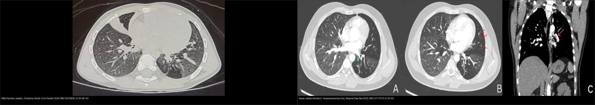
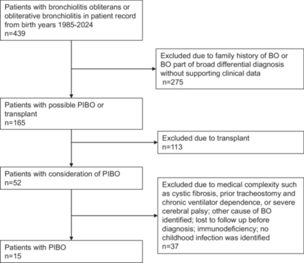
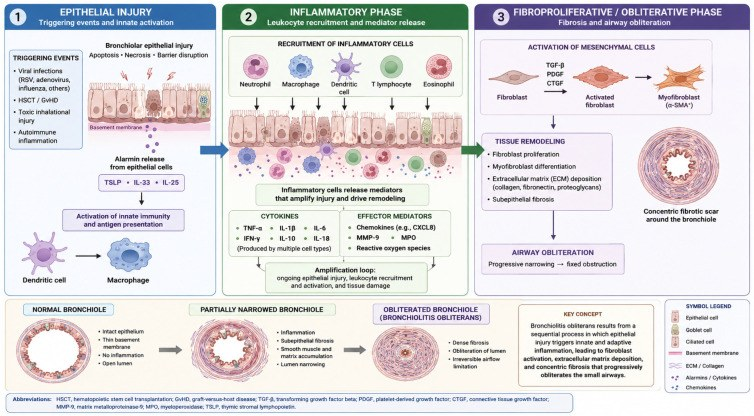
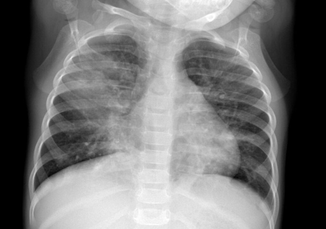
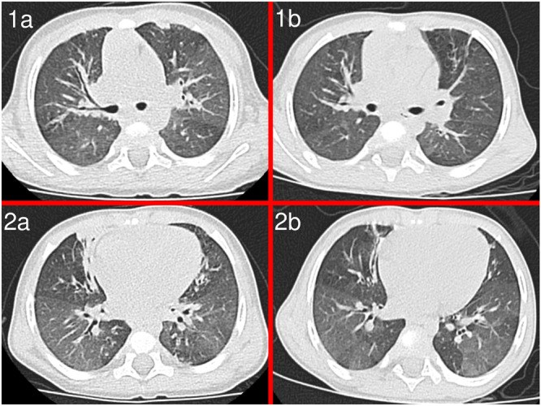
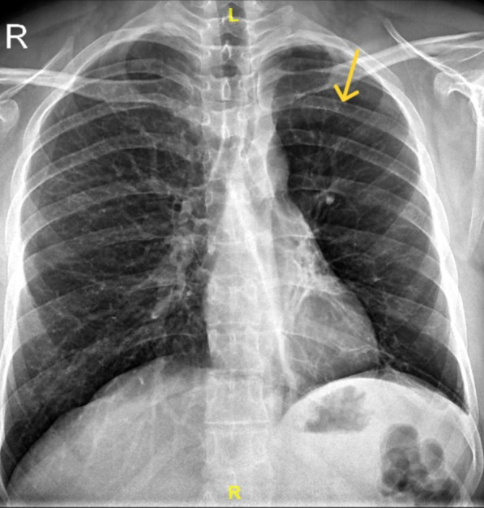
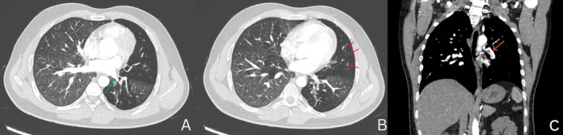
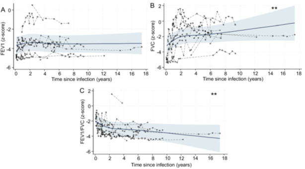
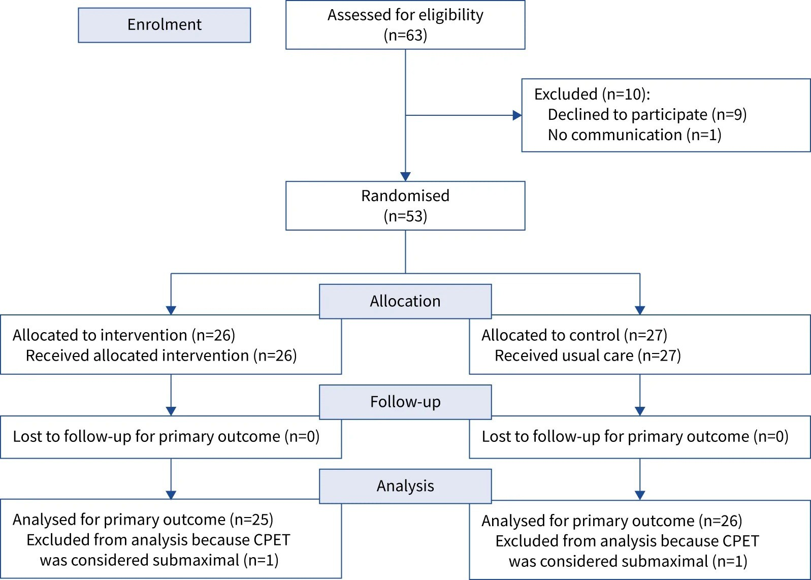
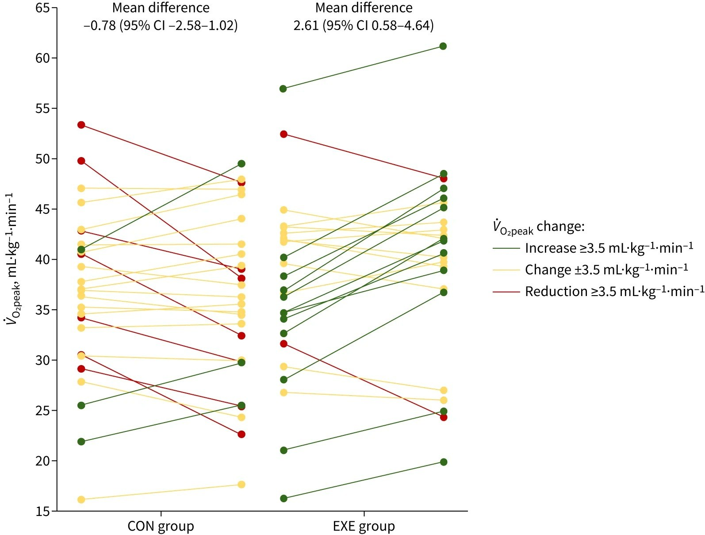

669 — Theo dõi dài hạn BO hậu nhiễm trùng & Swyer–James ở trẻ: tăng trưởng phổi, chức năng hô hấp & phục hồi chức năng / Long-term follow-up of post-infectious bronchiolitis obliterans & Swyer–James–MacLeod
Tags: pattern:u-khi pattern:viem-tieu-phe-quan pattern:phoi-mot-ben-sang vung:phoi vung:phe-quan score:spirometry-z protocol:HRCT-thi-tho-ra protocol:theo-doi-dai-han
Mức chắc chắn (certainty): tổng hợp y văn (literature synthesis) — nhóm tự biên từ các bài CC BY 4.0 / CC BY-NC 4.0 (Europe PMC); các ca trong quiz là ca nguyên văn (verbatim case) chép đúng tuổi – bệnh cảnh – chú thích gốc. Số liệu giữ nguyên nguồn, phần chưa kiểm chứng ghi "chưa rõ".
1. Tổng quan bệnh học – cơ chế hình ảnh
- Định vị chủ đề: bài 614 trả lời "chẩn đoán BO/Swyer–James"; bài này trả lời "sau đó thì sao" — trẻ BO hậu nhiễm trùng (post-infectious bronchiolitis obliterans, PIBO) sống và lớn lên cùng phổi đã hẹp tiểu phế quản, nên cần một chiến lược theo dõi dài hạn: chức năng hô hấp – tăng trưởng phổi – phục hồi chức năng – biến chứng – chuyển tiếp người lớn.
- Bệnh học (TẠI SAO tổn thương vĩnh viễn): sau đợt nhiễm trùng nặng, tổn thương biểu mô → viêm bạch cầu trung tính dai dẳng → sửa chữa bất thường kích hoạt TGF-β/CTGF, chuyển dạng biểu mô–trung mô, tương tác đại thực bào–nguyên bào sợi → xơ và bít lòng tiểu phế quản (constrictive bronchiolitis). Đây là tổn thương xơ cố định, không phải co thắt → đáp ứng thuốc giãn phế quản kém.
- Cơ chế hình ảnh chốt (TẠI SAO thấy mosaic/ứ khí): tiểu phế quản bị bít một phần → vùng phế nang phía sau giữ khí (air trapping); khí giữ lại chèn ép mạch máu vùng đó → giảm tưới máu → trên HRCT thì thở RA vùng đó vẫn sáng trong khi vùng lành xẹp lại = mẫu ba đậm độ / mosaic giảm tỷ trọng (mosaic perfusion): đậm độ thấp + mạch máu NHỎ lại = ứ khí, ngược với bệnh mạch (đậm độ thấp nhưng mạch vẫn to). Đây là cùng một bản chất vật lý ở phổi một bên (Swyer–James) hay hai bên (PIBO).
- TẠI SAO "thể tích phổi" quan trọng hơn "kích thước tổn thương": ở trẻ, phổi đang tăng trưởng → kết cục phụ thuộc tăng trưởng có cân xứng hay không. Nghiên cứu dọc (Vanderbilt, 15 trẻ PIBO) cho thấy tăng trưởng phổi loạn nhịp (dysanaptic, không tuyến tính): FEV₁ gần như giậm chân tại chỗ trong khi FVC tăng tiếp → tỉ lệ FEV₁/FVC giảm dần theo năm (chi tiết ở mục 4).
- TẠI SAO không dùng một mốc duy nhất để tiên lượng: quần thể rất không đồng nhất (tác nhân adenovirus vs Mycoplasma, tuổi, mức độ nặng ban đầu, có/không nhập ICU). Ca nặng có FEV₁ z-score −3,83 lúc đầu, nhưng một số cải thiện chức năng và hình ảnh sau điều trị (HRCT cải thiện tới 82% ở một loạt dùng khí dung phối hợp) → theo dõi chuỗi mới trả lời được.
2. Mẫu hình + chẩn đoán phân biệt theo vị trí (gamut)
- PIBO hai bên (hậu adenovirus/Mycoplasma): trẻ nhỏ (< 3–5 tuổi) sau viêm phổi nặng (nhiều ca nhập ICU), ho khò dai dẳng sau đợt cấp ~1 tháng (0–5 tháng), FEV₁/FEF₂₅₋₇₅ giảm, HRCT: ứ khí + mosaic + dày thành phế quản ± xẹp.
- Swyer–James–MacLeod một bên: hậu nhiễm trùng một bên → phổi một bên sáng, ứ khí, thể tích giảm, mạch máu thưa/động mạch phổi nhỏ, có thể giãn phế quản; thường phát hiện muộn / ở người lớn như biến chứng ho ra máu.
- Giãn phế quản không-CF / sau hoại tử–cắt thùy: xem bài 619 — ứ khí + giãn phế quản + "phổi bó", nhưng có can thiệp phẫu thuật trước đó và theo dõi hô hấp riêng.
- Hen (asthma): tắc nghẽn có hồi phục, đáp ứng giãn phế quản rõ, HRCT ít mosaic cố định → cần test hồi phục và HRCT thì thở ra để phân biệt.
- BOS sau ghép (ghép phổi/ghép tế bào gốc): tắc nghẽn tiến triển mới theo tiêu chuẩn NIH 2014 (FEV₁ giảm ≥ 10%), bối cảnh ghép → khác phác đồ, cần bài riêng (đang xếp lịch: 670).
- Bất thường mạch phổi khác: các bệnh mạch phổi tắc nghẽn cũng cho mosaic, nhưng ở đó mạch máu vùng sáng vẫn có/thrombus, không phải ứ khí → phân biệt bằng mạch máu trong vùng giảm đậm độ.
3. Bảng so sánh phân biệt (ma trận đối chiếu)
| Thực thể (entity) | Hình ảnh điển hình | Chốt vào (rule-in) | Chốt loại (rule-out) | Gợi ý xác nhận |
|---|---|---|---|---|
| PIBO hai bên | HRCT thì thở ra: ứ khí + mosaic (mạch nhỏ lại), dày thành phế quản ± xẹp; X-quang có thể chỉ thấy viêm phổi cũ | Tắc nghẽn CỐ ĐỊNH + mosaic cố định + ho khò dai dẳng sau nhiễm trùng nặng | Test hồi phục giãn phế quản rõ + về bình thường → nghĩ hen | HRCT thì thở ra + spirometry chuỗi |
| Swyer–James–MacLeod (một bên) | Phổi một bên sáng, thể tích giảm, mạch thưa, động mạch phổi nhỏ, có thể giãn phế quản; rốn phổi nhỏ | Một bên sáng + ứ khí + mạch thưa ĐỒNG NHẤT cả bên | Tổn thương khu trú/khối, van phế quản → nghĩ dị vật/tắc nghẽn cục bộ | So X-quang thẳng–nghiêng; CT; nếu cần soi loại dị vật |
| Giãn phế quản không-CF / sau cắt thùy | Dấu "vòng nhẫn" (signet ring), dày thành, "phổi bó" | Giãn phế quản có tiền sử mổ/hoại tử phổi | Bo tròn đều không giãn phế quản → nghĩ ứ khí đơn thuần | HRCT + PFT (bài 619) |
| Hen (asthma) | HRCT thường bình thường / dày thành nhẹ, không mosaic cố định | Tắc nghẽn + hồi phục (ΔFEV₁ rõ) + đáp ứng điều trị | Mosaic cố định trên thì thở ra → nghĩ BO | Test hồi phục; theo dõi |
| BOS sau ghép | Ứ khí/mosaic mới xuất hiện sau ghép | Tiêu chuẩn NIH 2014: FEV₁ giảm ≥ 10% + bối cảnh ghép | Không có ghép + khởi phát sau nhiễm trùng → PIBO | PFT chuỗi + HRCT thở ra |

Trái: PIBO hai bên — mosaic giảm tỷ trọng + đông đặc/xẹp và giãn phế quản. Phải: Swyer–James một bên — phổi trái sáng, ứ khí, thể tích giảm. Ảnh ghép letterbox, giữ nguyên tỉ lệ. Nguồn: Chiellino World J Clin Pediatr 2026 (PMC13010836, CC BY-NC 4.0) + Sivasubramanian et al. Respirol Case Rep 2025 (PMC12117374, CC BY 4.0).Lịch theo dõi dài hạn (khung thực hành)
| Hạng mục | Ngưỡng / nội dung | Chốt vào (rule-in) | Chốt loại (rule-out) |
|---|---|---|---|
| Spirometry | Làm được khi ≥ 5–6 tuổi; theo dõi mỗi 6–12 tháng | FEV₁ và FEF₂₅₋₇₅ giảm, đáp ứng giãn phế quản kém | DLCO thường bảo tồn (ít gợi ý bệnh mô kẽ) |
| HRCT | Thì thở ra để lộ ứ khí | Mosaic + ứ khí cố định | Không mosaic khi thở ra → ít nghĩ BO |
| Oxy/khí máu | Theo dõi hạ oxy mạn | Hạ oxy → nguy cơ tăng áp lực động mạch phổi | Oxy bình thường chưa loại trừ khi gắng sức |
| Dinh dưỡng – tăng trưởng | Biểu đồ tăng trưởng, cơ hô hấp | Suy dinh dưỡng làm yếu cơ hô hấp | — |
| Dự phòng | Vaccine cúm mùa + phế cầu; làm sạch đường thở nếu giãn phế quản | Đợt nhiễm trùng làm xấu chức năng | — |
| Phục hồi chức năng | Tập luyện (kể cả HIIT) | V̇O₂peak thấp → tập cải thiện | — |
| Ghép phổi | Bệnh giai đoạn cuối | Suy hô hấp tiến triển bất chấp điều trị | — |
4. Protocol chụp + hệ phân độ/điểm chuẩn hóa
- HRCT ngực: lớp mỏng, thì hít vào đủ + thì thở RA (hoặc cắt lớp ở 3 mức) — thì thở ra là chìa khóa để chứng minh ứ khí; cản quang không bắt buộc để chẩn đoán PIBO, chỉ khi cần phân biệt/đánh giá trước ghép.
- Spirometry + z-score (khung định lượng thay cho "RADS"): dùng z-score (không dùng % dự đoán) để so chuỗi theo thời gian. Số liệu dọc ở 15 trẻ PIBO (Vanderbilt, 11 trẻ có ≥ 1 lần đo, trung vị 14 lần/bệnh nhân):
- z-score lần đầu: FEV₁ −3,83 · FVC −2,92 · FEV₁/FVC −2,61.
- Thay đổi mỗi năm: FEV₁ +0,008 (p = 0,69 — giậm chân tại chỗ), FVC +0,185 (p = 0,003), FEV₁/FVC −0,143 (p = 0,004) → tăng trưởng phổi loạn nhịp (dysanaptic): phổi lớn lên nhưng đường thở nhỏ không lớn theo.
- 44% (4/9) có đáp ứng giãn phế quản; adenovirus khởi đầu FVC thấp hơn nhưng tăng FVC nhanh hơn nhóm khác (p < 0,001).

So sánh lần đo đầu và cuối: FEV₁ (đen), FVC (xanh), FEV₁/FVC (vàng) — trẻ nhiễm adenovirus (chấm đặc) khởi đầu FVC thấp hơn nhưng tăng nhanh hơn. Nguồn: Clegg et al., Pediatr Pulmonol 2026 (PMC13330942), CC BY 4.0.- Bối cảnh dịch tễ để tư vấn (định lượng):
- Loạt Pháp (147 trẻ PIBO, 18 trung tâm): 58,5% nam, tuổi chẩn đoán trung vị 22 tháng; 83,7% nhập viện cho đợt nhiễm trùng đầu (36,7% vào ICU); tìm được tác nhân 66,0%, chủ yếu adenovirus 28,5% và RSV 26,4%. Điều trị: ICS 90,5%, azithromycin 59,2%, pulse corticoid TM 40,8%.
- Loạt bùng phát adenovirus (11 trẻ): HRCT ứ khí 100%, mosaic 91%, dày thành phế quản 82%, xẹp phổi 82%; triệu chứng khởi phát trung vị 1 tháng (0–5 tháng) sau đợt cấp.
- Điều trị & bằng chứng (TẠI SAO theo dõi chứ không chỉ "kê đơn"): ICS liên tục > ngắt quãng (cải thiện FVC, FEV₁, MMEF₂₅₋₇₅); khí dung phối hợp (budesonide + terbutaline + ipratropium) cải thiện TPEF/TE, VPEF/VE và HRCT tới 82%; phối hợp fluticasone–azithromycin–montelukast đang hứa hẹn nhưng chưa đủ bằng chứng. Bản chất xơ cố định giải thích vì sao giãn phế quản không chữa khỏi bệnh.
- Phục hồi chức năng hô hấp (điểm mới, có số): thử nghiệm RCT đa trung tâm đầu tiên về HIIT (tập cường độ cao ngắt quãng) ở trẻ PIBO: nhóm tập tăng V̇O₂peak +3,39 mL·kg⁻¹·min⁻¹ (KTC 95% 0,82–5,97; p = 0,04) so với nhóm chứng (ngưỡng có ý nghĩa lâm sàng 1 MET = 3,5 mL·kg⁻¹·min⁻¹) → tập luyện là can thiệp có bằng chứng, không chỉ "nghỉ ngơi".

Sơ đồ sinh bệnh học PIBO: tổn thương biểu mô → viêm dai dẳng → các con đường xơ hóa (TGF-β/CTGF, chuyển dạng biểu mô–trung mô) → bít lòng tiểu phế quản. Nguồn: Zago et al., Biomolecules 2026 (PMC13406661), CC BY 4.0.flowchart TD
A[Trẻ sau viêm phổi nặng: ho khò dai dẳng] --> B[HRCT ngực thì hít vào + THỞ RA]
B --> C{ứ khí / mosaic cố định?}
C -->|Không| D[Nghĩ hen hoặc nguyên nhân khác]
C -->|Có| E[PIBO / BO hậu nhiễm trùng]
E --> F[Spirometry z-score khi ≥ 5-6 tuổi<br/>theo dõi mỗi 6-12 tháng]
F --> G{FEV1 giậm chân, FVC tăng, FEV1/FVC giảm?}
G -->|Có| H[Tăng trưởng phổi LOẠN NHỊP<br/>theo dõi sát lâu dài]
G -->|Không| I[Theo dõi định kỳ]
E --> J[Điều trị: ICS liên tục ± azithromycin<br/>± khí dung phối hợp]
E --> K[PHCN hô hấp: tập luyện/HIIT<br/>làm sạch đường thở nếu giãn phế quản]
E --> L[Theo dõi oxy mạn, dinh dưỡng,<br/>vaccine cúm + phế cầu]
L --> M{Hạ oxy mạn / tăng áp lực phổi?}
M -->|Có| N[Điều trị hỗ trợ, cân nhắc ghép phổi giai đoạn cuối]
E --> O[Chuyển tiếp sang người lớn ~18 tuổi<br/>theo dõi suốt đời]
5. Biến thể bình thường và cạm bẫy
- Mosaic trên HRCT thì HÍT VÀO có thể là bình thường/giả — phải chụp thì thở ra để xác nhận ứ khí; đây là cạm bẫy số một.
- X-quang "bình thường" không loại trừ PIBO (nhất là giai đoạn sớm) — chẩn đoán dựa vào lâm sàng + HRCT + PFT, và ở trẻ < 5–6 tuổi không làm được spirometry chuẩn → nhiều ca chẩn đoán muộn.
- "Phổi một bên sáng" chưa chắc Swyer–James: phải loại trừ dị vật/van phế quản, nang/khối, bất thường mạch phổi — vì chúng cần xử trí khác.
- Đừng gộp PIBO với BOS sau ghép: bối cảnh (ghép) và tiêu chuẩn (NIH 2014, FEV₁ giảm ≥ 10%) khác nhau; đây là lỗi gộp nhầm hay gặp.
- Đừng nhầm mosaic ứ khí với bệnh mạch phổi: chốt bằng mạch máu TRONG vùng giảm đậm độ — nhỏ lại = ứ khí; còn/thrombus = mạch.
- Hạn chế bằng chứng: phần lớn nghiên cứu nhỏ, hồi cứu, ngắn hạn → mọi ngưỡng tiên lượng dài hạn còn yếu, cần theo dõi cá thể hóa.
6. Tự lượng giá — Blind Quiz
Ca 1 — Trẻ sau viêm phổi nặng, X-quang ngực còn đông đặc. Mô tả trước khi mở đáp án.

- Gợi ý lâm sàng: viêm phổi adenovirus nặng, sau đó ho khò dai dẳng.
- Câu hỏi: X-quang này gợi ý gì? Bước hình ảnh tiếp theo là gì và vì sao?
Bấm để hiện đáp án (findings + chẩn đoán)
- Đông đặc thùy trên và thùy giữa bên phải trên phim của trẻ viêm phổi adenovirus về sau tiến triển thành PIBO.
- Bước tiếp: HRCT thì thở ra để tìm ứ khí/mosaic (chẩn đoán mới xác lập), rồi theo dõi spirometry khi trẻ đủ lớn.
- Nguồn ảnh: Chiellino, World J Clin Pediatr 2026 (PMC13010836), CC BY-NC 4.0.
Ca 2 — HRCT trẻ PIBO. Đọc dấu hiệu chốt.

Bấm để hiện đáp án (findings + chẩn đoán)
- Xẹp thùy giữa có dấu phế quản hơi (air bronchogram) + giãn phế quản, kèm mẫu mosaic lan tỏa và ứ khí — hình ảnh điển hình PIBO sau adenovirus.
- Chốt: ứ khí/mosaic cố định trên thì thở ra (không phải hiệu ứng mạch máu bình thường).
- Nguồn ảnh: Chiellino, World J Clin Pediatr 2026 (PMC13010836), CC BY-NC 4.0.
Ca 3 — HRCT trước và sau các đợt corticoid. Có gì thay đổi?

Bấm để hiện đáp án (findings + chẩn đoán)
- (1a, 1b) trước điều trị: viêm quanh phế quản, mosaic/ứ khí; (2a, 2b) sau các đợt corticoid: giảm viêm quanh phế quản, phần ứ khí/mosaic giảm.
- Chốt: tổn thương xơ thì ít đổi; phần viêm có thể cải thiện → cơ sở cho điều trị chống viêm và theo dõi bằng ảnh chuỗi.
- Nguồn ảnh: Traunero et al., Pediatr Pulmonol 2025 (PMC11960595), CC BY 4.0.
Ca 4 — Phổi một bên sáng ở người lớn ho ra máu.

Bấm để hiện đáp án (findings + chẩn đoán)
- Phổi trái sáng hơn hẳn (mũi tên) so với phải → nghĩ Swyer–James–MacLeod (ứ khí + mạch thưa một bên).
- Đối chiếu CT:

- CT: vùng sáng lan tỏa, xơ + giãn phế quản thùy dưới/lingula, thể tích trái giảm, động mạch phổi trái nhỏ, động mạch phế quản trái phì đại (nguồn chảy máu → nút mạch phế quản kiểm soát ho ra máu).
- PFT ca này: FVC 77,4% · FEV₁ 62,9% · FEV₁/FVC 0,70 (tắc nghẽn).
- Nguồn ảnh: Sivasubramanian et al., Respirol Case Rep 2025 (PMC12117374), CC BY 4.0.
Ca 5 — Đường cong chức năng hô hấp theo thời gian. Tăng trưởng phổi có "cân xứng"?

Bấm để hiện đáp án (findings + chẩn đoán)
- FEV₁ z-score gần như nằm ngang (thay đổi +0,008/năm, p = 0,69), trong khi FVC z-score tăng (+0,185/năm, p = 0,003) → FEV₁/FVC giảm dần (−0,143/năm, p = 0,004).
- Chốt: tăng trưởng phổi loạn nhịp (dysanaptic, không tuyến tính) — phổi lớn nhưng đường thở nhỏ không lớn theo → PFT ban đầu: FEV₁ z −3,83, FVC z −2,92, FEV₁/FVC z −2,61.
- Nguồn ảnh: Clegg et al., Pediatr Pulmonol 2026 (PMC13330942), CC BY 4.0.
Ca 6 — Trẻ PIBO, chức năng tim–hô hấp kém. Tập luyện có giúp?

- Gợi ý: trẻ PIBO ổn định, được mời tham gia chương trình tập luyện tại nhà có giám sát từ xa.

Bấm để hiện đáp án (findings + chẩn đoán)
- So sánh trước–sau (T0→T1) giữa nhóm tập (EXE) và chứng (CON): nhóm tập tăng V̇O₂peak +3,39 mL·kg⁻¹·min⁻¹ (KTC 95% 0,82–5,97; p = 0,04); ngưỡng có ý nghĩa 1 MET = 3,5 mL·kg⁻¹·min⁻¹.
- Chốt: HIIT an toàn và hiệu quả ở trẻ PIBO → đưa phục hồi chức năng vào khung theo dõi.
- Nguồn ảnh: Salazar-Pérez et al., Eur Respir J 2026 (PMC13650447), CC BY-NC 4.0.
Bài liên quan chéo
- 614 – Bệnh tiểu phế quản tắc nghẽn (BO) & Swyer–James (chẩn đoán)
- 613 – Viêm tiểu phế quản ở nhũ nhi (RSV)
- 616 – Biến chứng viêm phổi nhi: mủ màng phổi & hoại tử phổi
- 617 – Hội chứng rò khí ở nhũ nhi
- 619 – Di chứng hô hấp sau hoại tử phổi & cắt thùy ở trẻ
- 600 – Tổng quan Nhi
Ảnh
- 10 ảnh + 1 ảnh ghép trong
images/, nguồn & giấy phép từng ảnh ởimages/CREDITS.md. - Tải từ Europe PMC (CC BY 4.0, một phần CC BY-NC 4.0 — giữ nguyên bản khi là NC-ND, bài này không có ảnh ND). Radiopaedia/AuntMinnie chỉ dẫn link trong
sources.md.
Không dùng để chẩn đoán độc lập khi chưa có người hướng dẫn.